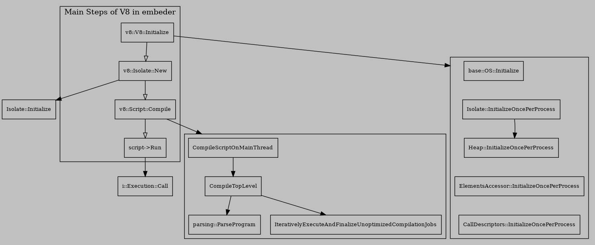

Initialization of V8
Table of Contents
1. Outline of Initialization
Main steps of a embedder to use V8:
- v8::V8::Initialize()
- v8::Isolate::New()
- v8::Script::Compile()
- script->Run()

1.0.1. Initialize of V8
Memory are reserved by mmap.
Initialization of V8 Done by v8::V8::Initialize(). The function will Initialize those resources that shared by all Isolates, this step must done before any creation of Isolates, for example, IsolateGroup, MemoryAllocator, WasmEngine, etc.
If you need to known how those process wide resources is setup then you may need to look into v8::V8::Initialize().
- Isolate Initialize
Isolate is allocated by interface:
Isolate::Allocate(IsolateGroup* group)With allocate of multiple Isolates with the same IsolateGroup, able to shared the same memory sapce among Isolates. If with pointer compressions enable this action result in Isolates shared an memory space that size is not greater than 4GB.
- Initialization with Snapshot
For the purposes to speed up the initialization of Isolate. Chromium use mksnapshot to create
- snapshotblob.bin
- gen/v8/embedded.S
The first one save the time to create heap objects when create Isolate. The second one save the time to compile Builtins when create Isolate.
I’m intresting for the second one so I will explain it here.
embedded.S is a assembly source with four global symbols:
- v8Defaultembeddedblobdata_
- v8defaultembeddedblobdatasize_
- v8Defaultembeddedblobcode_
- v8Defaultembeddedblobcodesize_
Structure of datablob is defined by class v8::internal::EmbeddedData at //v8/src/snapshot/embedded/embedded-data.h.
codeblob is simply a blob of bytes of builtins. With entry of datablob, able to recognize instructions of builtins in codeblob, with offset of start instructions.
With snpashot start, these four symbols will be linked at compiled. So these two files is generated before compilation of V8 by mksnapshot.
- Initialization with Snapshot